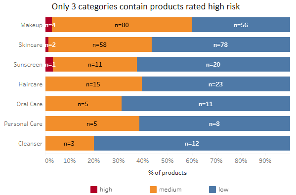
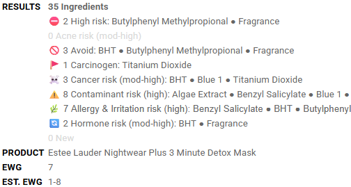
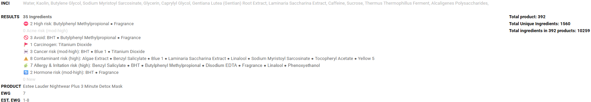
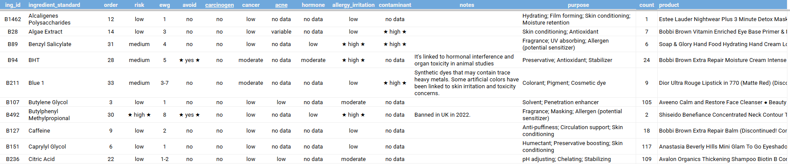
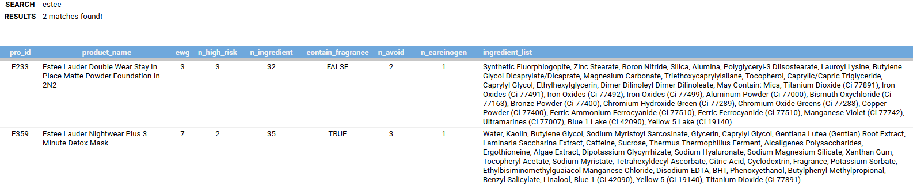
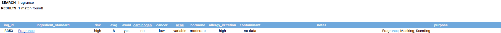

Karen Winter
Data Analyst
Portfolio project
SELECT COALESCE(risk,'total') risk, COUNT(*) AS ingredients, CONCAT(ROUND(COUNT(*)/(SELECT COUNT(*) FROM ingredient)*100,2),'%') pct_distro FROM ingredient GROUP BY risk WITH ROLLUP ORDER BY GROUPING(risk), ingredients DESC;


About me
I spent about 15 years at a large telecommunications company, most recently as a Senior Sales Operations Analyst. Here are some of the data and reporting projects I worked on:
- Built weekly sales performance reports and presentations for leadership and the Director's staff meetings.
- Developed the Quality Door Tracker in Google Sheets, consolidating 1,200+ outlet records and achieving a 95% data completion rate; leadership leveraged this data to drive strategic brand improvements.
- Analyzed operational cost data in Excel with pivot tables and slicers, which helped cut costs by $9K in two months.
- Generated and distributed daily and monthly sales dashboard reports to key stakeholders.
- Analyzed Net Promoter Score (NPS) results to help improve customer satisfaction.
- Designed standardized reporting templates to reduce manual effort while ensuring consistent formatting across all deliverables.
- Built a Promo Finder tool in Google Sheets with QUERY functions. The Operations team could search promotions by date, which sped up our answers to escalations.
Throughout my career, people have known me as a problem solver. Account managers often came to me when they had a difficult customer escalation and needed help. I also like sharing what I've learned on my own with my team. I made troubleshooting guides in Google Slides that listed the resources and steps for fixing different system and promotion issues. Attention to detail and strong organizational skills are two of my key strengths. Both contributed to locating the right resources and navigating complex problems effectively.
I love learning, which is why I've spent the past few years developing skills that I can apply across a variety of roles. I started with cloud computing and earned the AWS Certified Solutions Architect - Associate certification after about a year of studying. Along the way, I also completed courses in Linux, networking, Bash, and Python. However, as I continued learning new material without consistently applying what I had already learned, I found it difficult to retain and reinforce those skills. So I decided to pick one area and really focus on it, and I landed on data analysis. It's something I'm passionate about, and I already had experience with it from my reporting work. Since then, I've studied SQL and Tableau through Analyst Builder, an online learning platform with courses in data analytics.
My INCI project is how I put those skills to use. It has two parts: the Cosmetic Ingredient Analysis and the Ingredient Lookup Tool. The project started with my own skincare and makeup. I first learned about "clean" beauty in 2022 and started paying more attention to potentially harmful ingredients in my products, such as PFAS ("forever chemicals"), some of which have been linked to cancer. I wanted to develop a tool that would provide a comprehensive overview of a product's ingredients and their potential health risks. In 2024, I started designing the Ingredient Lookup Tool and gathering data on each ingredient I came across. Now I use it whenever I shop for new products rather than relying on brand advertising and customer reviews. It helps me make more informed decisions by identifying health risks associated with each ingredient and avoiding ingredients such as fragrance, which can contain hormone disruptors.
My projects
Cosmetic Ingredient Analysis
A deep dive into 392 beauty and personal care products and their 1,560 unique ingredients, using hazard ratings from the Environmental Working Group (EWG) and other safety sources. Built with Google Sheets, MySQL, and Tableau.
View projectIngredient Lookup Tool
A Google Sheet that generates an overview of every ingredient in a product, including its EWG score, risk level, acne, cancer, hormone, irritation, and contamination concerns. It also shows personal notes and past products that contain each ingredient.
View projectCosmetic Ingredient Analysis
I collected the ingredient lists for 392 beauty and personal care products by hand, covering 1,560 unique ingredients. A product's ingredient list is also called an INCI list (International Nomenclature of Cosmetic Ingredients), which is where my INCI project gets its name. The goal was to understand how a product's ingredients relate to its EWG score and other safety concerns. Instead of looking up each product on EWG one at a time, I combined several sources into one dataset, so I could compare products side by side and spot patterns across all 392.
I used Google Sheets to collect and clean the data, MySQL to analyze it, and Tableau Public to chart it.
Go to: MySQL analysis · Tableau dashboard
EWG scores and my risk levels
The Environmental Working Group (EWG) is a nonprofit that rates personal care products and their ingredients in its Skin Deep database. Each one gets a hazard score from 1 to 10, based on known and suspected health concerns. The lower the score, the safer.
EWG's scale
- 1 to 2: low hazard
- 3 to 6: moderate hazard
- 7 to 10: high hazard
- EWG Verified: products that meet EWG's strictest standards. No score is assigned.
My risk levels
- Low: 0 to 3
- Medium: 4 to 7
- High: 8 to 10
- EWG Verified: these products are assigned a rating of 0 in this data, which falls under low risk.
EWG's scale is strict. A score of 3 already counts as moderate, and a 7 counts as high. Since I built this project for my own personal use, I set my own levels: ratings of 0 to 3 count as low risk, and "high risk" is reserved for ratings of 8 and above. This shifts both of EWG's risk thresholds up by one point.
The data
Data sources
- EWG's Skin Deep database (ewg.org/skindeep): product and ingredient EWG scores, plus the cancer, hormone, allergy/irritation, and contaminant columns.
- California Proposition 65 list: the carcinogen column.
- Skinwis ingredient analyzer (skinwis.com/analyzer): the acne risk column (low, medium, or high).
- My own choices: the avoid list, the low, medium, and high risk levels, and my notes.
Tables
- product: one row per product, with its brand, category, and EWG score. There are 392 products in 7 categories.
- ingredient: one row per ingredient, with its EWG score range and flags for avoid, carcinogen, acne, and more. There are 1,560 ingredients.
- product_ingredient: a bridge table that links each product to its ingredients, with one row per ingredient in each product. There are 10,259 rows.
- ingredient_map: matches 880 variations of ingredient names to their standard names.
Data cleaning
- Built the ingredient_map table:
- Removed duplicates from the ingredient table and added each variation to ingredient_map
- Created the product_ingredient table to catch the rest, and filtered it for ingredients with no matching
ing_id - Researched about 1,000 of those by hand to confirm whether each was a variation of an existing standard name
- Corrected misspelled ingredient names found during that review
- Added each confirmed variation to ingredient_map instead of keeping it as a duplicate ingredient
- Split EWG score ranges (like "1-2") into separate minimum and maximum columns, after Google Sheets read some of the ranges as dates
- Removed products whose ingredients didn't match anything in the ingredient table
- Removed ingredients that weren't used by any product
- Made sure the EWG columns only held numbers. Some scores were stored as text, so I multiplied them by 1 to convert them.
- Converted the fragrance column to true/false values so Tableau could read it
- Standardized brand spellings with
TRIM,PROPER,CLEAN, andREGEXREPLACE, and removed extra details and stray characters like "/" from product names - Removed duplicate products
Limits of this data
- The 392 products aren't a random sample of what's on the market, so the results may not apply to all beauty and personal care products.
- EWG scores are one organization's ratings. Other sources may rate the same ingredient differently.
EWG has not reviewed or endorsed this analysis.
MySQL analysis
I loaded the 4 tables into MySQL and wrote 12 queries. Each one starts with the question I wanted to answer. What I found is written under each query.
These results show what goes together in my data. They don't prove that one thing causes another.
Loading the data
I built the 4 tables in Google Sheets first. The Table Data Import Wizard in MySQL Workbench gave me errors, so I created the tables with CREATE TABLE and loaded the data with INSERT statements. To build the rows of values, I used a Google Sheets formula with ARRAYFORMULA, TEXTJOIN, and SUBSTITUTE. I ran into three problems along the way:
- Blank and "N/A" values caused errors. They turned out to be ingredients with no EWG score, so I removed them.
- Names with an apostrophe, like Paula's Choice, broke the statement.
SUBSTITUTEdoubles the apostrophe (Paula''s Choice) to fix it. - MySQL reads a backslash (\) as an escape character, so I replaced every backslash with a forward slash.
1. Risk distribution across all the ingredients
SELECT COALESCE(risk,'total') risk, COUNT(*) AS ingredients, CONCAT(ROUND(COUNT(*)/(SELECT COUNT(*) FROM ingredient)*100,2),'%') pct_distro FROM ingredient GROUP BY risk WITH ROLLUP ORDER BY GROUPING(risk), ingredients DESC;
Only 1% of the ingredients (16 of 1,560) are in the high-risk category.
2. Which product categories have the highest share of high-risk products?
SELECT COALESCE(category,'Total') category, SUM(CASE WHEN ewg <= 3 THEN 1 ELSE 0 END) AS low_risk, SUM(CASE WHEN ewg BETWEEN 4 AND 7 THEN 1 ELSE 0 END) AS medium_risk, SUM(CASE WHEN ewg >= 8 THEN 1 ELSE 0 END) AS high_risk, COUNT(*) AS total_product, ROUND(AVG(ewg),1) AS avg_ewg, CONCAT(ROUND(SUM(CASE WHEN ewg <= 3 THEN 1 ELSE 0 END) / COUNT(*) * 100, 1),'%') AS low_risk_pct, CONCAT(ROUND(SUM(CASE WHEN ewg BETWEEN 4 AND 7 THEN 1 ELSE 0 END) / COUNT(*) * 100, 1),'%') AS medium_risk_pct, CONCAT(ROUND(SUM(CASE WHEN ewg >= 8 THEN 1 ELSE 0 END) / COUNT(*) * 100, 1),'%') AS high_risk_pct FROM product GROUP BY category WITH ROLLUP ORDER BY GROUPING(category), SUM(CASE WHEN ewg >= 8 THEN 1 ELSE 0 END) / COUNT(*) DESC, AVG(ewg) DESC;
Sunscreen has the highest share of high-risk products (3.1%), but that's only 1 product out of 32. Makeup has the most high-risk products (4). I also have the most products in makeup, and it has the highest average EWG score (3.9). Overall, the bigger categories tend to have more high-risk products and higher average EWG scores, but it's not a perfect pattern.
3. For brands with at least 5 products, how many of their products are medium or high risk (EWG 4 or higher)?
SELECT brand, COUNT(*) AS n_product, SUM(ewg >= 4) AS medium_high_products, ROUND(SUM(ewg >= 4) / COUNT(*) * 100, 1) AS pct_medium_high, ROUND(AVG(ewg),2) AS avg_ewg FROM product GROUP BY brand HAVING COUNT(*) >= 5 ORDER BY avg_ewg DESC, n_product DESC;
Dior and Shiseido have the highest average EWG scores (about 6.5), and every one of their products is medium or high risk. SKIN1004, Good Molecules, and e.l.f. have the lowest (2.2 to 2.3).
4. Which ingredients appear most often across products (top 15)?
SELECT pi.ing_id, i.ingredient_standard, i.ewg, COUNT(DISTINCT pi.pro_id) AS n_product FROM product_ingredient pi JOIN ingredient i ON pi.ing_id = i.ing_id GROUP BY pi.ing_id, i.ingredient_standard,i.ewg ORDER BY COUNT(DISTINCT pi.pro_id) DESC LIMIT 15;
The most common ingredients all have low EWG scores. Water is in 288 products and glycerin is in 231.
5. Which ingredients have a high EWG score (EWG 8 or higher)?
SELECT i.ingredient_standard, ewg_min, ewg_max, COUNT(DISTINCT pi.pro_id) n_product, ewg_max-ewg_min AS ewg_gap, carcinogen, cancer, avoid FROM ingredient i LEFT JOIN product_ingredient pi ON pi.ing_id=i.ing_id WHERE ewg_max >=8 GROUP BY i.ingredient_standard, ewg_min, ewg_max, carcinogen, cancer,avoid ORDER BY ewg_max DESC, ewg_gap DESC, n_product DESC;
This list helped me decide which ingredients to avoid. I tend to avoid ingredients with a high EWG score (8 or higher) and a small EWG gap (2 or less). A bigger EWG gap means the risk depends on the product formulation (powder vs. liquid). Take carbon black as an example. It's high risk in powder form, but all of my makeup products with carbon black are in liquid form. That lowers the health risk a lot, which is why I don't avoid this ingredient.
I don't avoid most retinoids, even with their high EWG scores. They're one of the best-proven anti-aging ingredients, and the concentration in cosmetic products is low. Retinyl palmitate is the exception. It's on Sephora's Clean Beauty list of ingredients a product must be made without, and none of the other retinoids are on that list. A 2012 study also found it sped up skin tumors in mice exposed to UV light. In my products it shows up in lipsticks and an eye primer I wear during the day, not in anti-aging treatments, so I'd rather skip it.
6. Which products contain high-risk ingredients (EWG 8 or higher)?
SELECT p.pro_id, p.product_name, p.category, p.ewg AS product_ewg, COUNT(pi.ing_id) AS high_risk_ingredient, ROUND(AVG(i.ewg_max),2) AS avg_ewg_high_risk_ing, GROUP_CONCAT(DISTINCT i.ingredient_standard ORDER BY i.ingredient_standard SEPARATOR ', ') AS high_risk_ingredients FROM product p JOIN product_ingredient pi ON p.pro_id = pi.pro_id JOIN ingredient i ON pi.ing_id = i.ing_id WHERE i.ewg_max >= 8 GROUP BY p.pro_id, p.product_name, p.category, p.ewg ORDER BY high_risk_ingredient DESC, avg_ewg_high_risk_ing DESC;
110 products contain at least one high-risk ingredient. I was surprised to see that more than a quarter of the products I use (28%) contain these ingredients.
7. How are fragranced products spread across each category?
SELECT COALESCE(category,"Total") AS category, COUNT(*) AS total_products, COUNT(CASE WHEN contain_fragrance = "True" THEN 1 END) AS fragrance_product, COUNT(CASE WHEN contain_fragrance = "False" THEN 1 END) AS no_fragrance_product, ROUND(COUNT(CASE WHEN contain_fragrance = "True" THEN 1 END)/COUNT(*) *100,2) AS fragrance_percentage, ROUND(AVG(ewg),2) AS avg_ewg, ROUND(AVG(CASE WHEN contain_fragrance = "False" THEN ewg END),2) AS avg_ewg_no_fragrance, ROUND(AVG(CASE WHEN contain_fragrance = "True" THEN ewg END),2) AS avg_ewg_fragrance, ROUND(AVG(CASE WHEN contain_fragrance = "True" THEN ewg END),2) - ROUND(AVG(CASE WHEN contain_fragrance = "False" THEN ewg END),2) AS gap_avg_ewg FROM product p GROUP BY category WITH ROLLUP ORDER BY GROUPING(category), avg_ewg_fragrance DESC;
In every category that has fragranced products, they have a higher average EWG score than the ones without fragrance. Overall it's 5.56 with fragrance vs. 3.15 without. Skincare has the biggest gap (6.21 vs. 3.07), and haircare has the most fragranced products (39%).
8a. What percentage of products in each category contain ingredients I avoid, and how does that affect their average EWG scores?
SELECT COALESCE(category,"Total") AS category, COUNT(*) AS total_product, SUM(n_avoid > 0) AS avoid_products, ROUND(SUM(n_avoid > 0)/COUNT(*)*100,2) AS avoid_percentage, ROUND(AVG(CASE WHEN n_avoid > 0 THEN ewg END),2) AS avg_ewg_avoid, ROUND(AVG(CASE WHEN n_avoid = 0 THEN ewg END),2) AS avg_ewg_no_avoid FROM product GROUP BY category WITH ROLLUP ORDER BY GROUPING (category), avoid_products DESC;
36% of my products (141) contain at least one ingredient I avoid. They average 4.50 vs. 2.96 for products without them, and they score higher in every category. Haircare has the highest share at 58%.
8b. Which ingredients I avoid show up in the most products, and what are their risk profiles?
SELECT i.ingredient_standard, i.ewg_max, i.hormone, i.carcinogen, i.cancer, i.acne, COUNT(DISTINCT pi.pro_id) AS products, ROUND(AVG(p.ewg),2) AS avg_product_ewg FROM ingredient i JOIN product_ingredient pi ON pi.ing_id = i.ing_id JOIN product p ON p.pro_id = pi.pro_id WHERE avoid = 'yes' GROUP BY i.ingredient_standard, i.ewg_max, i.hormone,i.cancer, i.carcinogen, i.acne ORDER BY products DESC, ewg_max DESC;
There are 39 ingredients I avoid, and fragrance is in the most products (59). I avoid ingredients with an ewg_max of 10, except carbon black. It's the only one of those 5 ingredients with an ewg_min of 3, which makes its EWG gap bigger. That means its safety depends on more variables. I also avoid ingredients that can disrupt hormones (preservatives like BHT and parabens).
Synthetic ureas can release formaldehyde, so I avoid those as well. I avoid ingredients that I know break me out, like biotin, VP polymers, and glyceryl dioleate, even though they have low EWG scores.
9. Do more ingredients lead to a higher EWG score?
SELECT CASE WHEN n_ingredient <= 10 THEN '01: 1-10 Ingredients' WHEN n_ingredient <= 20 THEN '02: 11-20 Ingredients' WHEN n_ingredient <= 30 THEN '03: 21-30 Ingredients' ELSE '04: 31+ Ingredients' END AS ingredient_bracket, COUNT(*) AS product_count, ROUND(AVG(ewg), 2) AS avg_ewg_rating, MIN(ewg) AS lowest_ewg, MAX(ewg) AS highest_ewg FROM product GROUP BY 1 ORDER BY 1 ASC;
It does seem like the average EWG score goes up as the ingredient count goes up, from 1.94 for 1-10 ingredients to 4.37 for 31+.
10a. What percentage of my products contain carcinogens? Compare by category, and compare the average EWG with vs. without.
SELECT COALESCE(category,'total') AS category, COUNT(*) AS total_products, SUM(n_carcinogen > 0) AS carcinogen_products, ROUND(SUM(n_carcinogen > 0) / COUNT(*) * 100, 1) AS pct_carcinogen, ROUND(AVG(CASE WHEN n_carcinogen > 0 THEN ewg END),2) AS avg_ewg_with, ROUND(AVG(CASE WHEN n_carcinogen = 0 THEN ewg END),2) AS avg_ewg_without FROM product GROUP BY category WITH ROLLUP ORDER BY ISNULL(category), pct_carcinogen DESC;
36.5% of my products contain at least one carcinogenic ingredient, so I dig into what those ingredients are in 10b. Makeup has by far the highest share (82.9%).
10b. Which carcinogenic ingredients are in my products?
SELECT i.ingredient_standard, i.ewg, i.risk, i.cancer AS ewg_cancer_concern, COUNT(DISTINCT p.pro_id) AS products FROM ingredient i JOIN product_ingredient pi ON pi.ing_id = i.ing_id JOIN product p ON p.pro_id = pi.pro_id WHERE i.carcinogen = 'yes' GROUP BY i.ing_id, i.ingredient_standard, i.ewg, i.risk, i.cancer ORDER BY products DESC;
Only 3 carcinogenic ingredients show up in my products, and I'm not too concerned about 2 of them (titanium dioxide and carbon black).
Tableau dashboard
I built a Tableau Public dashboard with 6 charts to show the main patterns. It's interactive, so you can hover over a chart to see the details.
Clicked something and the charts changed?
Ingredient Lookup Tool
When a product's full ingredient list is pasted into the tool, it gives a snapshot of the product's risks. It also shows each ingredient next to past purchases that contain it.
Why not just use EWG?
- Combines several sources in one snapshot: EWG scores, the California Proposition 65 carcinogen list, Skinwis acne ratings, a personal avoid list, and notes. No separate lookups are needed, which saves time when comparing products.
- Breaks down every ingredient with its own risk flags. That breakdown matters more for a purchasing decision than a single product score.
- Shows which past purchases contain each ingredient, which helps spot ingredients that have caused breakouts before.
- Works on any product label, including products EWG hasn't rated. Any new ingredient gets added to the ingredient table.
- Uses custom risk levels instead of EWG's stricter scale.
How it works
- A product's ingredient list is pasted into one cell.
- The sheet splits it into one row per ingredient, in the same order as the label. Order matters because ingredients near the top are used in larger amounts.
- Each ingredient is matched to its standard name using a mapping table, so different spellings on different labels still find the right ingredient.
- It pulls in the EWG score range and the risk flags for each ingredient, plus notes on why an ingredient is on the avoid list.
- It shows which past purchases contain the same ingredient. That helps spot ingredients that have caused breakouts before.
A 52-second recording of the tool in use, with captions. It has no sound.
What it flags
The top of the sheet gives a quick summary of the product:
- Total number of ingredients
- High-risk ingredients (EWG 8 or higher)
- Ingredients on the avoid list
- Carcinogen, cancer, hormone, acne, allergy and irritation, and contamination concerns
- New ingredients that aren't in the data yet and need research
Click a screenshot to see it full size.

Below the summary, a table gives the details for every ingredient:
- EWG score, risk flags, purpose, and notes
- Stars on every "high" and "yes"
- How many products in the data contain the ingredient, and which ones

There is also a product search and an ingredient search. Typing part of a product name or an ingredient shows every match with its scores and flags.
Product search

Ingredient search

How I built it
The main functions I used are XLOOKUP and FILTER for lookups; REGEXREPLACE, REGEXMATCH, SPLIT, TEXTJOIN, and UNIQUE for cleaning and splitting text; and LET, LAMBDA, MAP, BYROW, and ARRAYFORMULA for running formulas across whole lists. I built the formulas with help from AI tools. I described what each formula needed to do and got a first version back, but it wasn't always correct. So I tested each one and went back and forth until it returned the right results. I kept notes on every change in a formula tab.
Building the formulas came with a few challenges. Here's how I handled each one:
- Splitting the ingredient list. Splitting on commas wasn't enough. Some chemical names contain commas, like 1,2-Hexanediol, and color codes come in groups, like Iron Oxides (CI 77491, CI 77492, CI 77499). Fixing one often broke the other, so both had to be handled together. I kept adding rules until every ingredient landed on its own row with a clean name.
- Removing extra label text. Labels often include text that isn't an ingredient, like "May Contain (+/-):" before a group of colors. A targeted pattern (
\(\+/-\)) removed the (+/-) block without touching descriptions in other parentheses, so "May Contain (+/-): CI 77891 (Titanium Dioxide)" became "CI 77891 (Titanium Dioxide)". Leftover slashes between items, like "Tocopherol. / CI 77163", were removed too. - Removing percentages without breaking names. Labels show concentrations in different ways, like (2.5%), Avobenzone 3.0% or (0.12 Ppm). The formula had to remove those while keeping descriptions in parentheses, like (Kukui) in Aleurites Moluccanus (Kukui) Seed Oil. At first it split the list before removing percentages, so "Titanium Dioxide 9%" and "Titanium Dioxide" were treated as two different ingredients. Moving the percentage removal before the split made them identical, and
UNIQUEcombined them into one row. - Assigning product categories. Each product gets a category, like Skincare or Makeup, based on keywords in its name. A formula uses
MAPandREGEXMATCHto check every product name against a keyword list on a hidden tab, and picks the category with the best match. Keywords written in quotes count double, so a specific phrase beats a general word. Getting there took a few fixes: word-boundary searches (\b) didn't work next to parentheses, and matches were case-sensitive until a case-insensitive flag ((?i)) was added. - Getting accurate ingredient counts. My first formulas worked on each product's ingredient text directly. Some used
REGEXMATCHto search for every name an ingredient goes by, like Bismuth Oxychloride and Ci 77163 (Bismuth Oxychloride), but the counts were still off. "May contain" was counted as an ingredient, and searching for "Fragrance" gave wrong results. I rebuilt the formulas to count from the product_ingredient table, and the numbers came out right. - Order of the results. The results were sorted A to Z at first. I changed them to keep the order on the label, because ingredients are listed from highest to lowest concentration.
The sheet itself stays private because it holds the data I collected by hand. The video and screenshots show how it works.